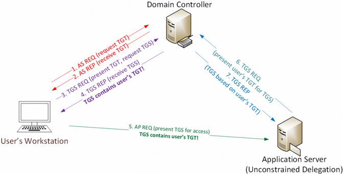

When Active Directory was first released with Windows 2000 Server, Microsoft had to provide a simple mechanism to support scenarios where a user authenticates to a Web Server via Kerberos and needs to update records on a back-end database server on behalf of the user. This is typically referred to as the “Kerberos double-hop issue” and requires delegation in order for the Web Server to impersonate the user when modifying database records.
Kerberos Unconstrained Delegation:
Microsoft implemented Kerberos “unconstrained delegation” in Windows 2000 that enables this level of delegation. A Domain Admin can enable this delegation level by checking the middle box (Trust this computer for delegation to any service (kerberos only) in DC properties). The third box is for “constrained delegation” which requires listing of specific Kerberos services on computers to which delegation is enabled.
Discovering computers with Kerberos unconstrained delegation is fairly easy using the Active Directory PowerShell module cmdlet, Get-ADComputer.
- Unconstrained Delegation: TrustedForDelegation = True
- Constrained Delegation: TrustedToAuthForDelegation = True
Import-Module ActiveDirectory Get-ADComputer -Filter {(TrustedForDelegation -eq $True) -AND (PrimaryGroupID -eq 515) } -Properties TrustedForDelegation,TrustedToAuthForDelegation,servicePrincipalName,Description
Kerberos Communication Flow:
Let’s follow the standard Kerberos communication flow.
Here’s a quick example describing how Kerberos works:
User logs on with username & password.
1a. Password converted to NTLM hash, a timestamp is encrypted with the hash and sent to the KDC as an authenticator in the authentication ticket (TGT) request (AS-REQ).
1b. The Domain Controller (KDC) checks user information (logon restrictions, group membership, etc) & creates Ticket-Granting Ticket (TGT).
2. The TGT is encrypted, signed, & delivered to the user (AS-REP).Only the Kerberos service (KRBTGT) in the domain can open and read TGT data
3. The User presents the TGT to the DC when requesting a Ticket Granting Service (TGS) ticket (TGS-REQ). The DC opens the TGT & validates PAC checksum – If the DC can open the ticket & the checksum check out, TGT = valid. The data in the TGT is effectively copied to create the TGS ticket
4. The TGS is encrypted using the target service accounts’ NTLM password hash and sent to the user (TGS-REP).
5. The user connects to the server hosting the service on the appropriate port & presents the TGS (AP-REQ). The service opens the TGS ticket using its NTLM password hash.
When Kerberos Unconstrained Delegation is enabled on the server hosting the service specified in the Service Principal Name referenced in the TGS-REQ (step 3), the Domain Controller the DC places a copy of the user’s TGT into the service ticket. When the user’s service ticket (TGS) is provided to the server for service access, the server opens the TGS and places the user’s TGT into LSASS for later use. The Application Server can now impersonate that user without limitation!
NOTE: In order for an application server to be configured with “Kerberos Unconstrained Delegation”, a Domain or Enterprise Admin needs to configure this setting on the computer account in the domain. This permission can be delegated to other groups, so be careful who has this right in Active Directory.

Tl;dr: The TGT will be stuffed into memory where an attacker can extract and reuse it if:
- You are able to compromise a server that has unconstrained delegation set.
- You are able to trick a domain user that doesn’t have ‘Account is sensitive and cannot be delegated’ enabled (see Protections below) to connect to any service on the machine. This includes clicking on \\SERVER\Share.